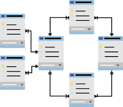

Creating two sample databases with mutliple tables that contains sample data from the web.
Purpose of this project is to demonstrate my understanding of MYSQL Databases/Tables and how they relate to each other.
Skills shown:
- Creation of Databases and Tables
- Inserting sample data into tables
- Linking tables together by using Foreign Key constraints and rules.

There are 10 select queries that vary in complexity within the jupyter notebook that is linked down below.
Each select query is broken down into 4 parts:
- The question being answered
- What types of clauses, functions, and operators were used in the query.
- A snippet of the query statement
- An image of the result from the executed query statement
Skills shown:
- Creating queries using basic operators, functions, and clauses.
- Able to use case statement
- Able to use the join and union operators
- Creating CTEs(common table expressions)
- Sub-Querying
- Using Window Functions and Partition by